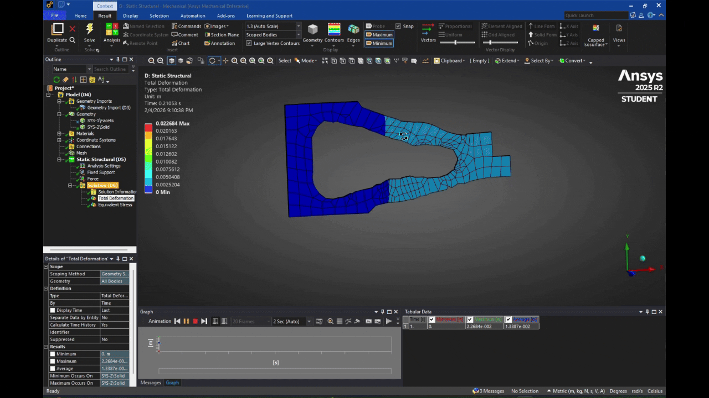
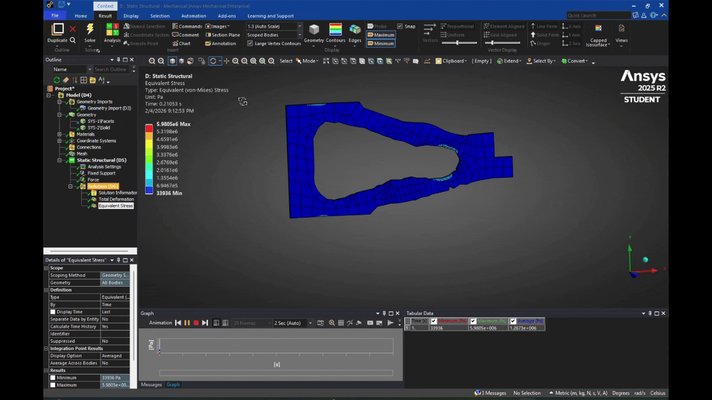

DARPA Heavy Lift Challenge
Structural Design & Optimization for Heavy-Lift Drone Systems
📅 2025 – Present- ANSYS Softwares
- Topology Optimization
- Finite Element Analysis
- Composite Structures
- Lightweight Design
Overview
As part of the DARPA Heavy Lift Challenge Team, I am working on the structural design and optimization of drone components intended to support extreme payload-to-weight ratios. The mission is to provide a drone capable of lifting 110+ lbs while weighing less than 55 lbs, which will then complete a 5-nautical mile run at DARPA's circuit court. We are currently competing with teams including both college students of all levels as well as industry professionals.
My primary responsibility is focused on using ANSYS to evaluate load paths, identify stress concentrations, and apply topology optimization techniques to reduce mass while maintaining structural integrity.
Topology Optimization
To determine the superior design of our drone arms, we are performing topology optimization with retained volume constraints to preserve stiffness while removing low-stress material. We are currently deciding between two main arm designs: twin plates made of DragonPlate (Carbon fiber for tension with Divinycell H100 foam sandwiched between for compression) or carbon fiber tubes. I am currently testing plate effectiveness, below is one of the current designs. Please note that the Ansys work shown on this page is only using foam as a material to optimize arm shape, though I have recently started incorporating carbon fiber in my simulations for better design comparisons.

Finite Element Analysis (FEA)
Designs were validated using static structural simulations to quantify total deformation and von Mises stress under representative load cases derived from flight and payload conditions. Mass considerations are crucial at this point in our design. We are carefully working to maintain a mass budget allocated to structures. As of right now, the tube design is about half as light, but the plates handle stress much better. I will be sure to update the page as we finalize our arm design. Below is how the topology optimized plate performed during simulation:


Engineering Impact
- Reduced structural mass while maintaining load capacity
- Improved understanding of real load paths in drone airframes
- Enabled design decisions compatible with advanced manufacturing
- Strengthened simulation-driven design workflow